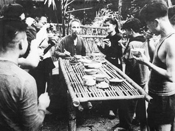

BÁT CHÈ XẺ ĐÔI
Chủ tịch Hồ Chí Minh
BÁT CHÈ XẺ ĐÔI
Đồng chí liên lạc đi công văn 10 giờ đêm mới đến. Bác gọi mang ra một bát, một thìa con. Rồi Bác đem bát chè đậu đen, đường phèn, mà anh em phục vụ vừa mang lên, xẻ một nửa cho đồng chí liên lạc.
- Cháu ăn đi!
Thấy đồng chí liên lạc ngần ngại, lại có tiếng đằng hắng bên ngoài, Bác giục:
- Ăn đi, Bác cùng ăn…

- Cảm ơn Bác, đồng chí liên lạc ra về.
Ra khỏi nhà sàn, xuống sân, đồng chí cấp dưỡng bấm vào vai anh lính thông tin. - Cậu chán quá. Cả ngày Bác có bát chè để bồi dưỡng làm đêm mà cậu lại ăn mất một nửa.
- Khổ quá, anh ơi! Em có sung sướng gì đâu. Thương Bác, em vừa ăn ra rớt nước mắt, nhưng không ăn lại sợ Bác không vui, mà ăn thì biết cái chắc là các anh mắng rồi...